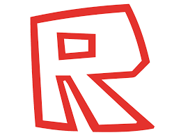

John Doe and Jane Doe are old test accounts created by Roblox co-founders David Baszucki and Erik Cassel on June 25, 2005 (although they are listed as joining February 27, 2006). The name John Doe refers to an anonymous male, and likewise, Jane Doe refers to an anonymous female. John Doe's user ID is #2, while Jane Doe's user ID is #3.
Below this, is a image of their most recognized skin:
During the mid to late 2010s they were known for being mentioned in many different fake 'hacker' stories and were mentioned in many clickbait videos which mostly appeared in 2016–2019.
Despite not being active on Roblox since 2006, John Doe and Jane Doe possessed Badges that were created in 2012 and accepted friend requests from users who joined in 2008. Maximum_ADHD Roblox Verified Badge created a video addressing how John Doe received badges from his place because of a bug in the Roblox client that allowed users to receive badges without playing a game.
A YouTuber named BADGRAPHIX also created a video explaining why John Doe was able to follow him. Like with the player badges, a bug in the Roblox web client allowed Robloxians to become friends with another player without them mutually agreeing to friendship (this bug has now been patched).
In around February 2017, several Robloxians (Users) such as Kazok, Equillex and more started a rumor saying that John Doe and Jane Doe would hack Roblox on March 18 (2017), and this rumor was frequently mentioned in some clickbait videos, which caused massive panic all over the game and site itself. It turned out to be false later. Roblox then had to explain the accounts in a blog post posted on March 21 (2017), and updated their appearance and cleaned their friend's lists.
The blog post goes in depth of the backstory of the accounts, clarifying the rumors and some more. The blog also clarifies that both accounts are owned and maintained by Roblox.
John Doe had 9 friends on his list while Jane Doe had 3 because of a bug that caused TheC0mmunity, IhaxLV, CPUVirtualization, and Ananymoos to be some of their friends in September 2015. Many other users like erik.cassel, 1x1x1x1, Games, qa and BrownCheese had this bug too. John Doe and Jane Doe's friends were later removed in late March 2017.
For unknown reasons, John Doe's feed and description were changed to [ Content Deleted ] in April 2017, likely a move by Roblox to convince players that the so-called 'hacker' had been dealt with.
Thanks for reading :D